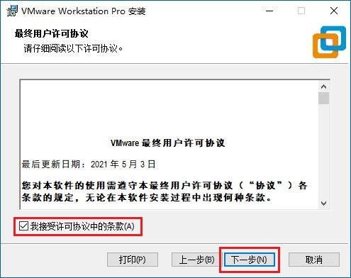
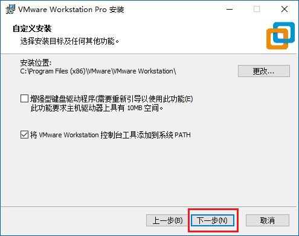
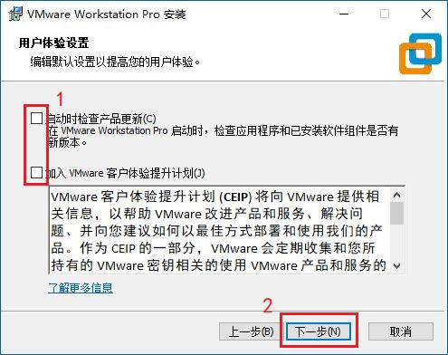
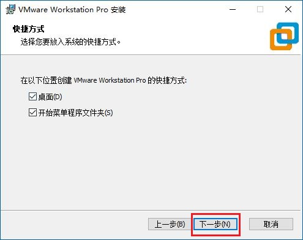
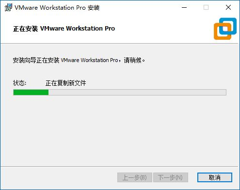
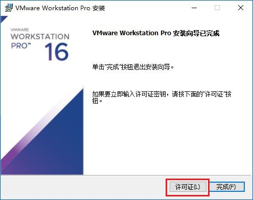
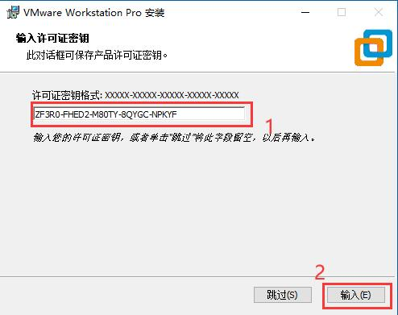
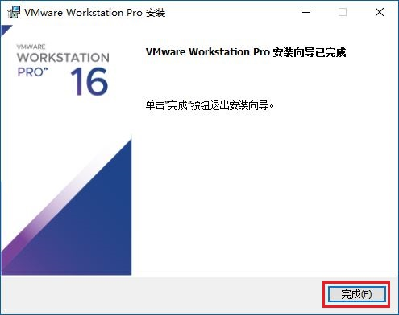

超简单！安装VM虚拟机(附RHEL7)
一、下载VMware Workstation安装包
下载VM16.2
二、安装VMware Workstation
(1)运行安装程序，单击"下一步"开始安装。

(2)勾选"我接受"，单击"下一步"继续。
(3)选择安装位置，建议默认，防止出现问题，单击"下一步"继续。
(4)建议取消两个勾选，然后单击"下一步"继续。
(5)已经默认勾选创建快捷方式，直接单击"下一步"继续。
(6)如前面步骤无误，单击"安装"，开始安装。

(7)稍等片刻，安装过程中建议不要移动和使用键盘鼠标，以免打断过程。
(8)安装完成后，建议输入许可证进行激活，否则只能试用一个月。单击"许可证"。
(9)输入许可证密钥，然后单击"输入"。
密钥：ZF3R0-FHED2-M80TY-8QYGC-NPKYF
(10)至此VM安装完毕，单击"完成"退出即可。
三、下载RHEL7虚拟机文件
下载RHEL7.zip